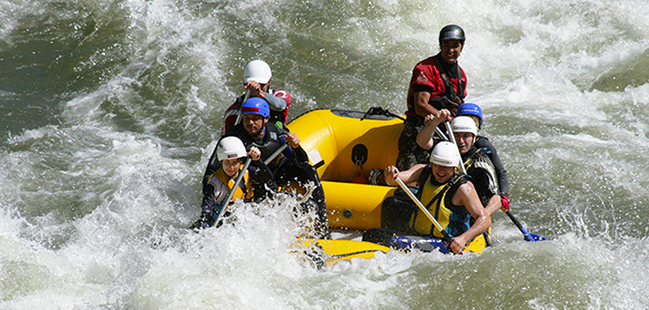
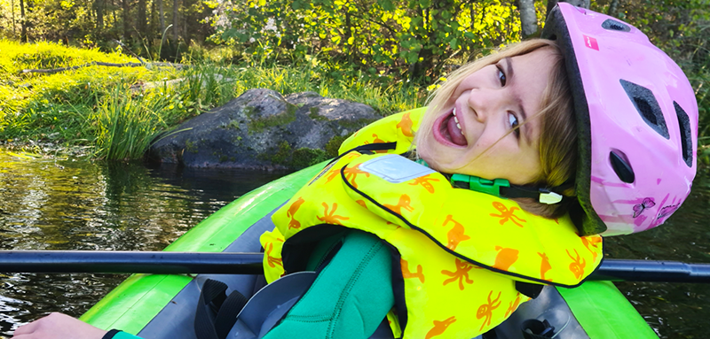
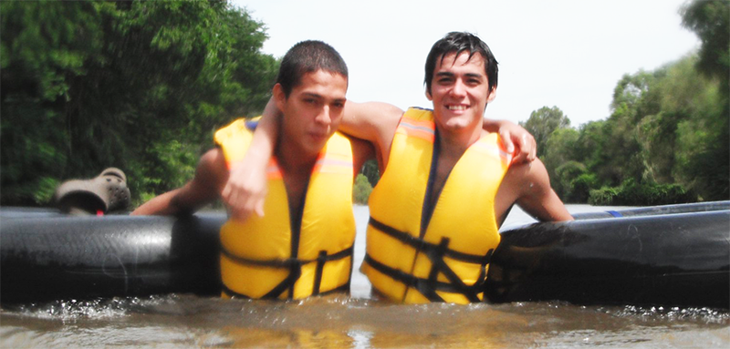
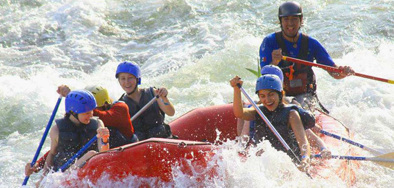
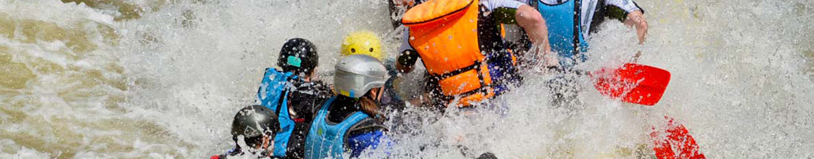
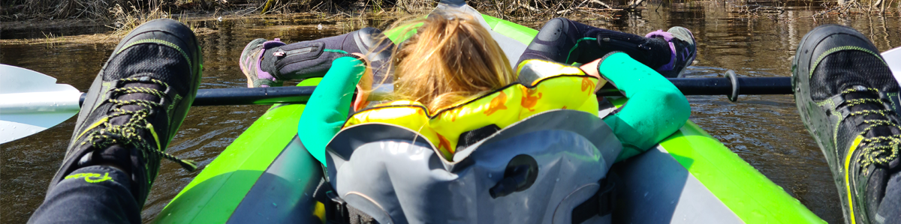
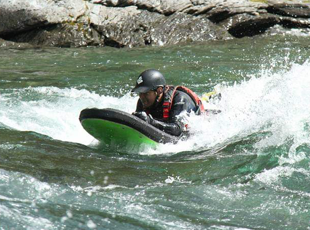
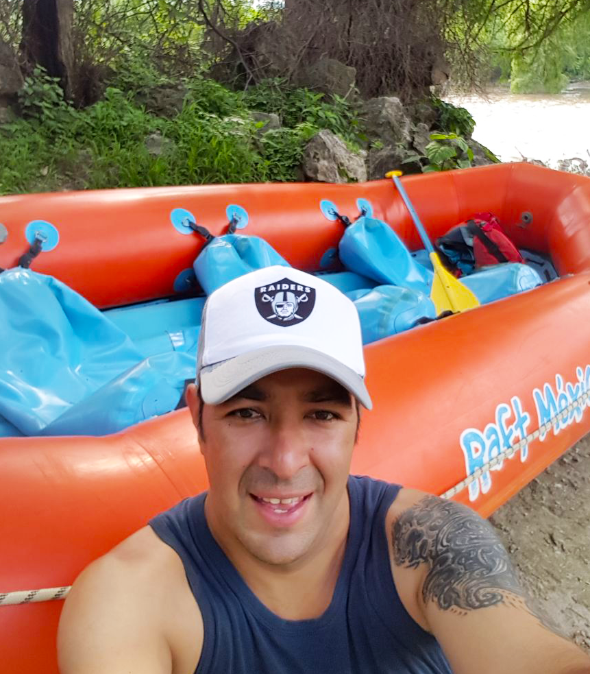
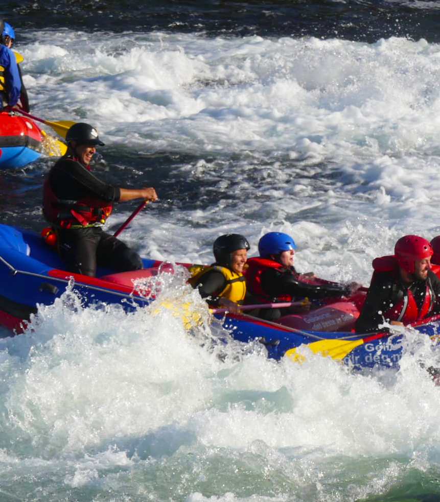
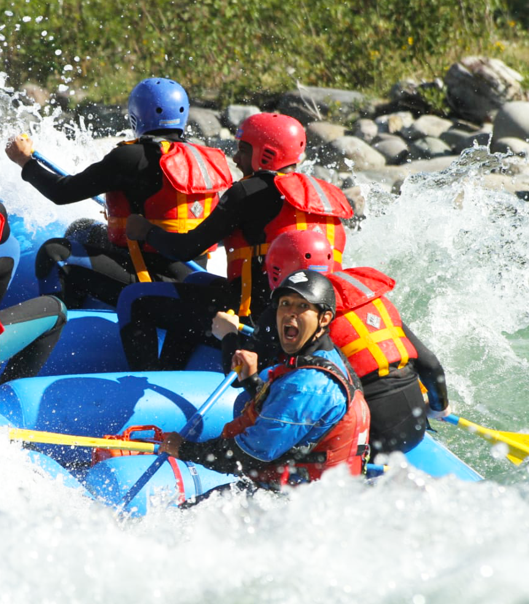

¡Próximas actividades a realizar con espacio disponible!




Somos en emprendimiento familiar pequeño que busca crecer en el Estado de Morelos.
Durante varios años hemos planeado este proyecto de la operadora de descensos de río en el río Amacuzac, con actividades como Rafting, Dookies, Tubing y Kayak de río.
Basados en la idea del respeto, organizamos y operamos bajo esta premisa. Respetando al medio ambiente, a las comunidades, a nuestros invitados, así como entre los que trabajos en Ríos Mexicanos.
Este proyecto inicio con la idea de emprender un camino propio en el mundo del Rafting, un camino que fuera único y en donde pudiese aplicar aquello que se ha adquirido a través de más de 20 años de experiencia en diferentes secciones de río en México y otros países.
Esto ha permitido adquirir experiencia en el trato a nuestros huéspedes, operación de recorridos de río seguros y divertidos, siempre en ese orden, así como la responsabilidad que una empresa de turismo de aventura debe contraer al momento de realizar actividades en áreas naturales, donde el impacto de estas actividades afectan directa e indirectamente a la vida silvestre de estas áreas.
Con la misma responsabilidad contraída, es el respeto a las comunidades locales donde realizamos las actividades, respetando usos y costumbres. Esto es para lograr una simbiosis entre la comunidad y nuestros visitantes, logrando visibilizar la relación que existe entre todos quienes vivimos en este país, en este planeta. Contribuyendo a la concientización del cuidado de nuestro planeta, de la importancia de los ríos, de la fragilidad en el balance entre actividad humana y el orden natural de la vida.
Este proyecto tiene la intención de contribuir a cuidar y preservar al río Amacuzac, a través de visibilizar su importancia para el medio ambiente y para las comunidades que viven y dependen de él.
Nos gustaría poder ayudar en lograr cambios magnos, pero para ello se necesita de una gran red de seres humanos que también quieran y deseen contribuir a proteger y preservar la cuenca del río Amacuzac, y que sirva como un referente para otras cuencas de nuestro país y del planeta.

Operar recorridos de aventura en el río Amacuzac y otros ríos en México, promoviendo las actividades deportivas como Rafting y kayak de río, así como actividades recreativas como Tubing y Dookies.
Ser una empresa establecida que promueva los deportes de río como es el Rafting, kayak de río, tubing y Dookies, con la finalidad de generar trabajo y fortaleciendo la simbiosis entre las actividades humanas y el río.

Fundador de este proyecto familiar, ya que esté proyecto no se lograría sin el apoyo de la familia, Sara y Sofia.
Después de 7 años de trabajar en el Noruega, junto con la familia, se decidió mudarse a México, a Cuernavaca de donde es originario, para estar cerca de su familia y regresar algo al río que lo introdujo al mundo del río.
Inició en el mundo del río en el año 2000, en el río Amacuzac, teniendo la oportunidad de trabajar en Veracruz, San Luis Potosí, Guerrero y en Oaxaca dentro de México, así como en Argentina, Costa Rica en America Latina, y en Eslovenia, Italia, Bulgaria y en Noruega en Europa.
Desde hace diez años, vivió en Suecia, con su familia, donde trabajo en el río en Italia, Bulgaria y Noruega, este último donde paso los últimos siete años, donde trabajó en diferentes compañías.
Guía nivel IV-V, Trip Leader clase IV por la IRF (International Rafting Federation), con cursos de rescate en aguas blancas por Rescue 3 Canadian, Rescue 3 International y por Rescue 3 Europe. Además de cursos de primeros auxilios en México, Suecia y Noruega, así como cursos de primeros auxilios en áreas remotas (Wilderness first aids) por Sierra Rescue Norway.
Tras 20 años de experiencia, inicia este proyecto con el sueño de poder atraer a más personas que deseen vivir este estilo de vida, que te lleva a ver al mundo con otra visión y con otro sentimiento, conectando con esta enorme red de vida.






